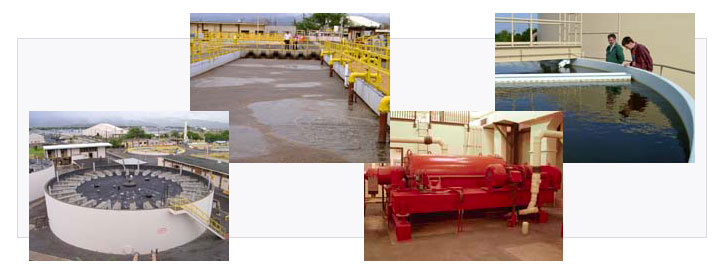

DST Controls understands the regulatory scrutiny and cost pressures that municipalities and their contractors face everyday. Hence our detailed pre-bid specification reviews, rigorous procurement processes, efficient project management, in-depth understanding of water and waste treatment processes, and our distaste for change orders all make DST an ideal sub-contractor in municipal automation projects!

DST's Water and Waste Treatment experience includes...
- State-wide SCADA and local control of potable and water-for-fire wells and pumping stations.
- Process control automation of the largest waste-water treatment facility on the west coast using redundant PLC control, remote instrumentation, data logging.
- Reactivated sludge process control--PLC control with variable speed pump drives.
- Flood control--PLC control with 150HP variable frequency drives.
- Bulk garbage shredder, conveyors and compactors. PLC control with variable frequency drives, maximum current monitoring of 1500HP shredders.
- Primary water treatment process automation- Refinery--Redundant PLC control w/ color graphic operator interface, interface with Honeywell TDC 3000.
- Pumping lift station for subdivision--PLC controlled with local operator intervention.
- Flood control and runoff water treatment for refinery--PLC controlled with multiple pump staging, telecommunication link to VAX host computer.
- Waste water treatment and neutralization for processing plant--PLC controlled with local instrumentation and computer interface for data acquisition.
- Municipal Waste Treatment (Pearl Harbor Naval base), HMI, PLC, data archiving, lift-station monitoring and control. Data concentrator for multi-protocol networking.
- Precise hopper gate control for high-speed, ± 1% accuracy, de-watered sludge truck-loading.
|